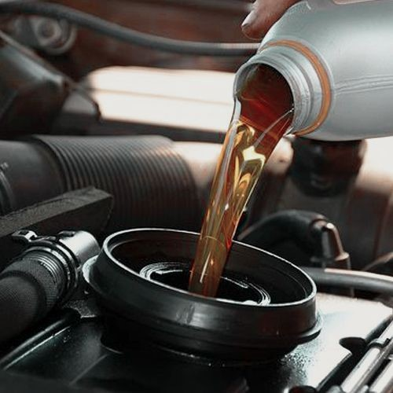

Importancia del mantenimiento preventivo
El mantenimiento regular de tu auto no solo alarga su vida útil, sino que también garantiza tu seguridad y la de los demás. A continuación te explicamos los aspectos básicos que debes revisar periódicamente.
Elementos clave a revisar
- Aceite del motor: Verifica el nivel y cámbialo según las recomendaciones del fabricante.
- Frenos: Revisa pastillas, discos y líquido de frenos.
- Neumáticos: Controla la presión y el desgaste regularmente.
- Batería: Asegúrate de que esté limpia y con buena carga.
- Filtros: Cambia los filtros de aire, aceite y combustible cuando sea necesario.
 Regresar a la página principal
Regresar a la página principal